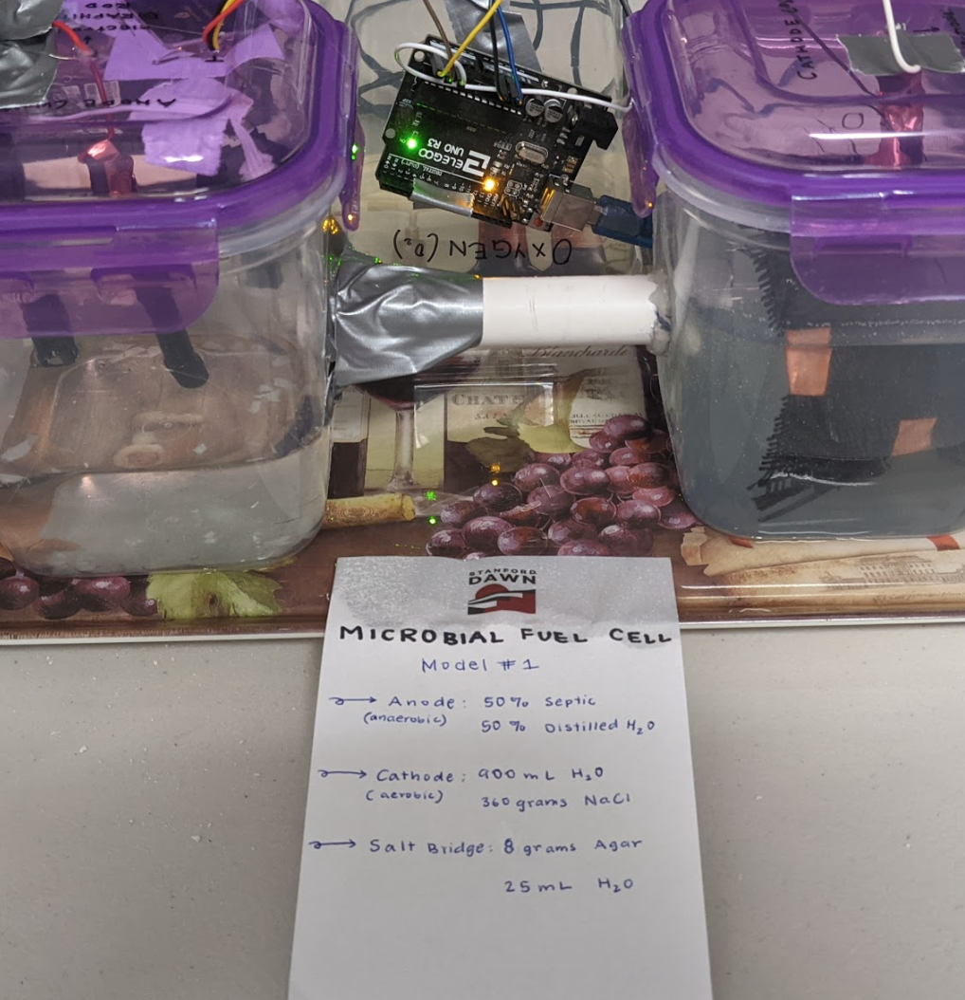
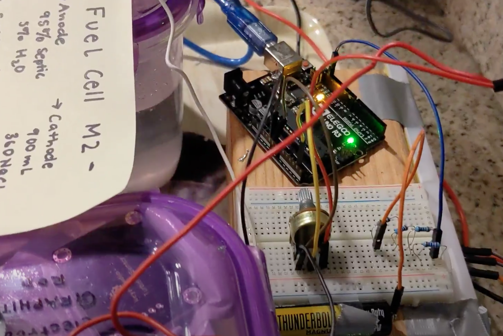

About me



Hello, I'm Anwesha.
Risks scare me in the best way. From throwing myself into new things to building innovations from scratch, I always love keeping my inner child curious. I enjoy combining art with science. To harness these talents, I’ve been innovating and building in Destination Imagination since I was 9. Over the years, where I once started with creating clownfish costumes out of coffee filters, I’ve began taking bigger risks. In 7th grade, I built a flower that bloomed and wilted with Arduino controlled stepper and servo motors and petals made from plastic folders. From there, I worked with a team to create a drone from scratch with Arduino to building a stage with scissor lifts to lift a person 6 feet into the air. From Destination Imagination, I’m now a 6x Global Finalist and a 3x Da Vinci award celebrating creativity. It’s been a journey, and I’ve only been able to take it by harnessing my fears.
The risk, the confusion, and the satisfaction that came with figuring things out and climbing over obstacles brought me back time and time again. I love reading and understanding the world around me, as well as making things myself. It brought me to the science fair, where I dived into renewable alternative energy sources. No matter how intimidating the internet can be, I have grown to love it. I used to be scared of all the research papers I’d be reading, with the overload of information and no way to understand it. Then again, reading off science was one thing; to see it, to make it happen in my own garage was an entirely different endeavor. I am a Science Olympiad participant for the past three years so I had my fair share of textbook material, specifically my experience in my events Water Quality, Green Generation and Codebusters (for which I have placed 4th at MIT’s Science Olympiad invitational). Now, three years later, I grow my own algae- the same algae I had read about was living in my garage. I have generated voltage in my garage out of microbial fuel cells, bacteria/cyanobacteria and pee. I’ve enjoyed diving into the field of sustainable energy through biochemical engineering and computer science. I know I wouldn’t be here today without taking risks and jumping into the unknown. For the my two science fair projects, I am now a 2023 ISEF finalist and a 2x CSEF (2023 and 2021) finalist. I am also an 2023 Amgen BioGENEius challenge finalist. Some specific awards I am so grateful to have received over the 2 years of my science fair participation: Stockholm Junior Water Prize, U.S. Navy & Marine Corps Award, Alameda Water Districts Water/Wastewater Research Award, Project Planet Special Award, A&W Environmental Leadership Award, 2x 1st Place Alameda County Science and Engineering Fair and 1st Place California Science and Engineering Fair. I cannot wait for the further opportunities that may present themselves along the way.
I am currently a Dublin High senior, hoping to graduate with an engineering certificate as a varsity athletic scholar. I have taken AP Computer Science Principles (9th), Honor Principles of Engineering (10th), Honors Digital Electronics (11th) and currently AP Computer Science Applications. I aim to run track in college, specifically to be recruited for the 400M. I hope to study the cross sections of the life sciences and engineering with a focus on bioenergy or artificial photosynthesis. I hope to major in engineering and applied science. From my current experiences in research, I want to be a researcher with my own lab one day to stay curious and keep exploring.